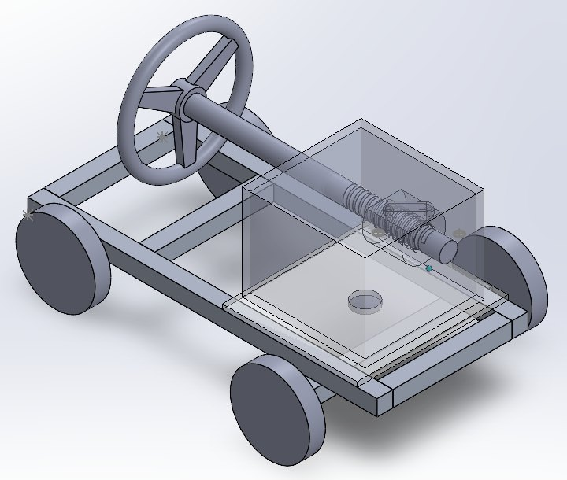
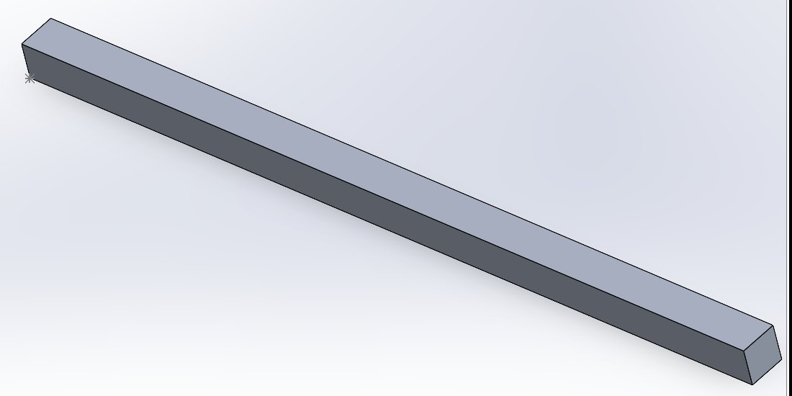
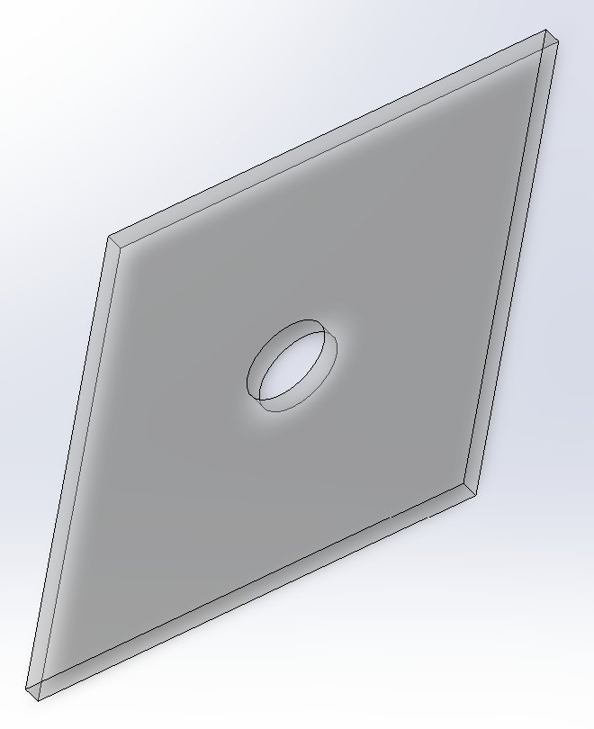
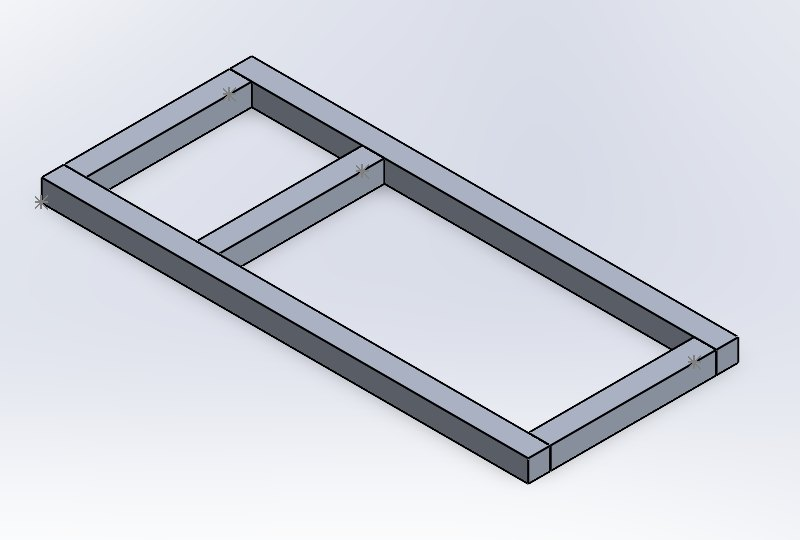
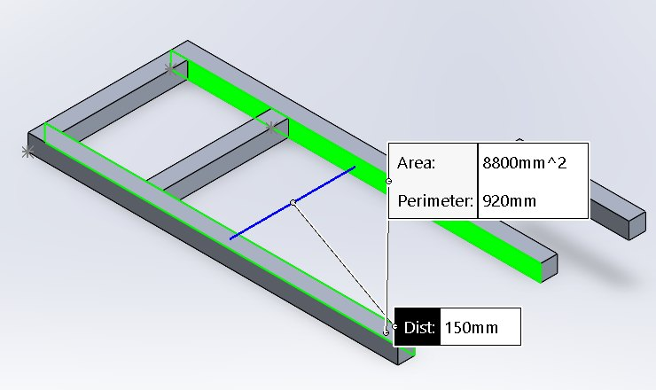
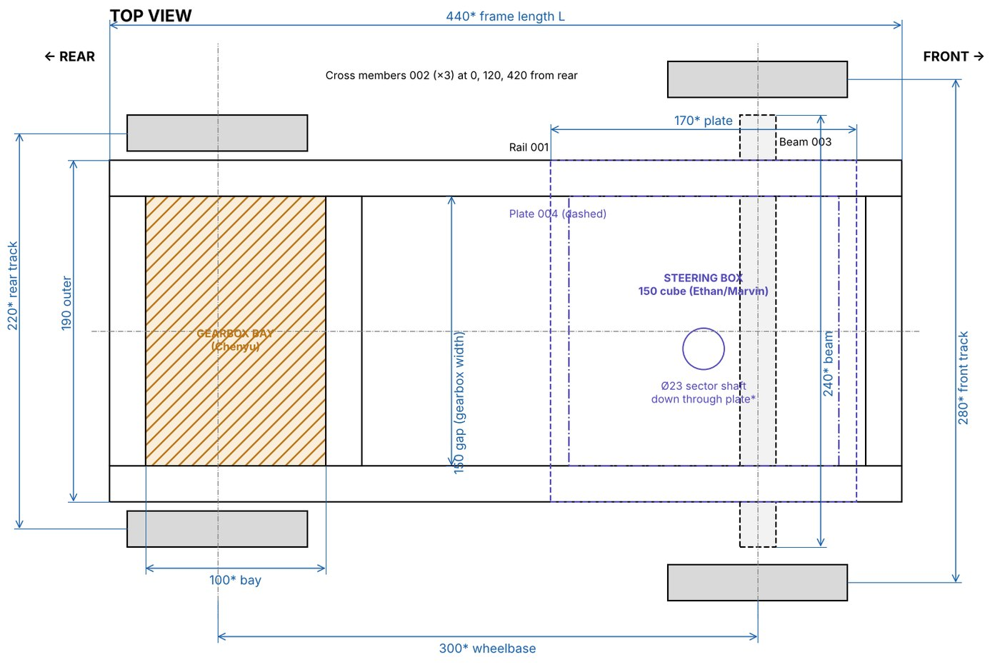
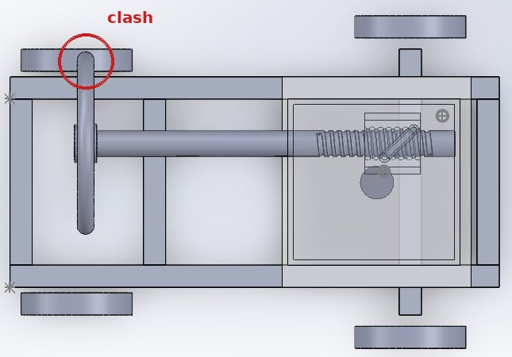
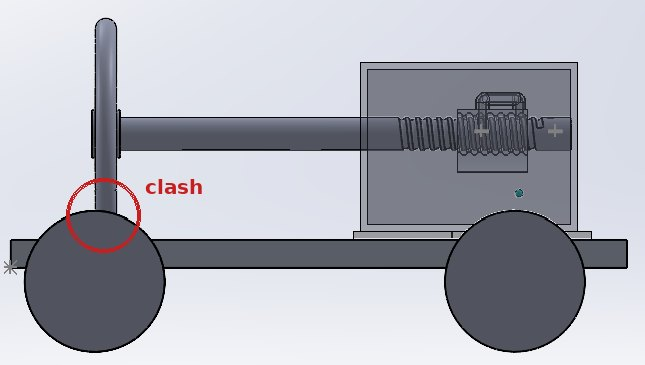

Aluminium T-slot extrusion
Bolts slide anywhere along the slots, so when a teammate changes a dimension, we move a mount instead of remaking the frame. No machining or welding, and it's about $5 per metre.
Mechanical Engineering Design I · Design Project · Nov 2026
Our team is designing a low-cost vehicle that students can take apart to learn about steering and gear ratios. My teammates designed the gearbox and the steering box. I designed the frame that holds them both, and I ran our project in Jira.

Engineering students learn about mechanisms from slides, but it's much easier to get when you can turn a knob and watch the gears move. Our brief was a vehicle trainer that teaches at least two different labs, can be reconfigured in under 10 minutes, and costs less than $350.
Our design has two halves: a hand-cranked gearbox with swappable ratio cassettes at the back, and a recirculating-ball steering box at the front. The chassis is what connects them. So it had to:
The hardest part wasn't the frame itself. It was designing around parts that didn't exist yet. Every choice below came back to that.
Bolts slide anywhere along the slots, so when a teammate changes a dimension, we move a mount instead of remaking the frame. No machining or welding, and it's about $5 per metre.
I set the gap between the rails to the gearbox width. Then it turned out Marvin's steering box is also 150 mm, so both subsystems drop right in between the rails.
The axles pass under the frame instead of through it, so there are no holes to drill in the extrusion. It still leaves 60 mm of ground clearance.
The box needs a flat seat, so a 6 mm acrylic plate spans both rails. It's clear on purpose: it's a teaching car, and students should be able to see the mechanism working.
The front wheels sit wider than the back ones, and people always ask why. When a wheel steers, its front edge swings in toward the frame. If the front wheels were as tight to the frame as the rear ones, they'd hit the rail almost as soon as you turned. Drag the slider to try it:
I'd only used SolidWorks for one assignment before this, so I wanted a model that was easy to change. Every size lives in one shared parameter file, and each part reads from it. If the team decides the car should be longer, I change one number and every rail rebuilds.
I also had to follow strict file naming (like G62-CH-001_Side-Rail), so anyone on the team can tell what a file is and which subsystem it belongs to.


Then came the assembly, and my first try went wrong. I assumed the wrong face of the rail was its inner side, so my cross pieces ended up poking out past the ends of the frame. Instead of patching mates on top of mates, I deleted all of them and started again, checking every single step with the Measure tool.



With the frame and wheels done, I put Marvin's real steering box onto my chassis to check that our parts actually fit together. The good news: the box fits between the rails exactly, just like we planned.
The bad news: his steering column is long enough that the steering wheel lands right over the back wheel, and the bottom of the rim runs into the side rail.


Each of us had checked our own part on its own, and each part was fine. The problem only showed up once they were together. Finding that on screen is much cheaper than finding it after 3D printing everything!
A longer car would move the back wheel out of the way, but the rail runs the whole length of the car, so the rim would still hit it. We'll most likely need both: a slightly longer wheelbase and a steering column that angles up. That's our first job for the next revision.
I was our scrum master, which mostly meant making sure four people designing four different things would end up with parts that fit. We work in two-week sprints, each aimed at a course check-in, with 10 epics (one per deliverable) and an owner on every task.
Honestly, our board went stale in October. Everyone was heads-down on their own part, and our designs slowly drifted apart. So before the final check-in, I audited the board against what we'd actually done, logged it truthfully, and changed how we work:
The steering clash is my favourite example of this working. I found it in CAD, it became a Jira task, and it now blocks our assembly, so it can't quietly get lost:
I built most of this assembly overnight before our final check-in, re-mating parts at 4 AM. It was stressful, but here's what I'll keep: